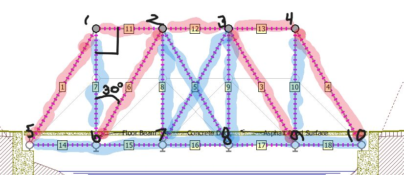
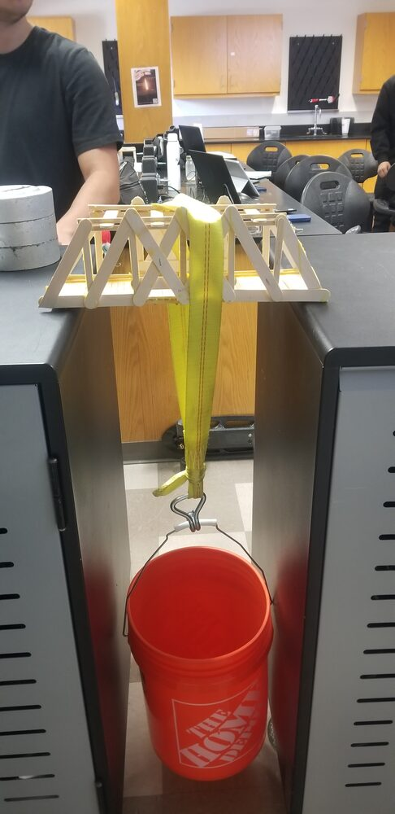
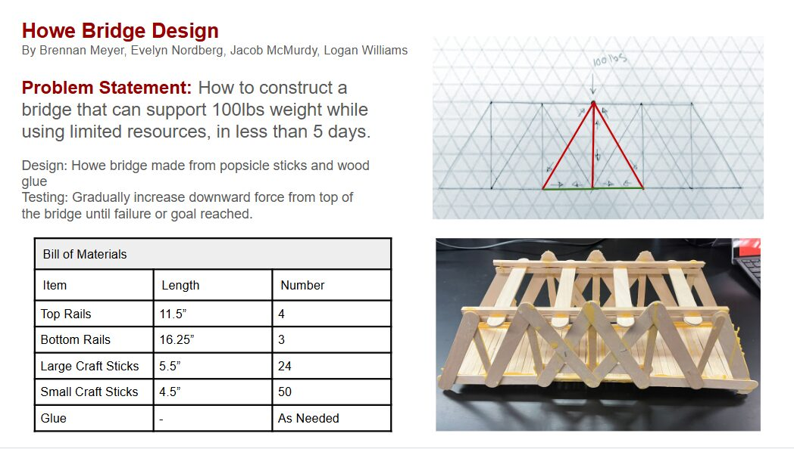
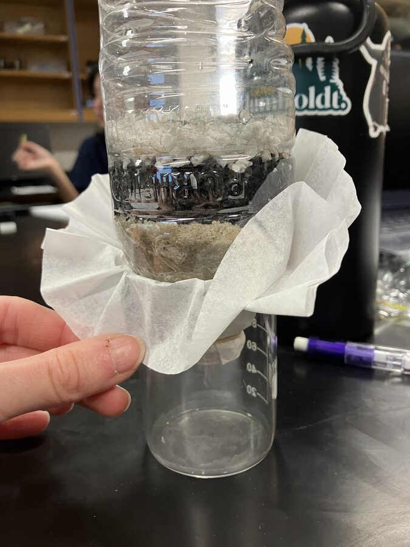

Where ideas become physical, tested things. In ENGR-101 I moved through the full engineering design cycle — define, model, build, measure, and iterate — across structures, water systems, CAD, and electronics.
I designed a truss bridge from the ground up, analyzed every member to determine whether it carried tension or compression, then built the physical bridge and load-tested it to failure. The whole process was documented in a formal engineering report and a summary poster.



Designed and built a multi-stage water filter, then analyzed how effectively each layer — sediment, sand, and activated charcoal — cleared turbidity from dirty water. Results were written up in a full analysis report.

Used CAD to model precision measurement tools — a ruler, a measuring cup, and a UV ring — and exported them as printable STL files. Also worked in AutoCAD on 2D technical drawings.
Built and programmed Arduino-based systems in the electronics labs, and worked through the design-and-build cycle again on a team Lego car project — from concept and progress reports to a final presentation.
Beyond the builds, the course covered the professional side of engineering: the formal design process, engineering ethics, team dynamics, project management, and an engineering education plan mapping out where I'm headed next.